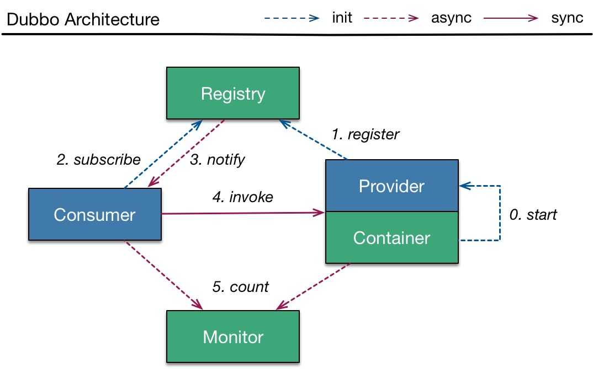

Dubbo 元数据管理
一、注册中心
传统架构
我们先来回顾一下 Dubbo 传统架构中最核心的组件：

我们知道 URL 是贯穿整个 Dubbo 服务注册与发现的核心 。Provider URL 注册到 ZooKeeper 上的大致格式如下：
1dubbo://192.168.0.100:20880/org.apache.dubbo.demo.DemoService?anyhost=true&application=demo-provider&deprecated=false&dubbo=2.0.2&dynamic=true&generic=false&group=groupA&interface=org.apache.dubbo.demo.DemoService&metadata-type=remote&methods=sayHello,sayHelloAsync&pid=59975&release=&side=provider×tamp=1601390276192其中包括 Provider 的 IP、Port、服务接口的完整名称、Dubbo 协议版本号、分组信息、进程 ID 等。
我们来看下传统的注册中心存在哪些架构上的挑战。
内存挑战：我们常用的注册中心，比如，ZooKeeper、Nacos 或 etcd 等，都是中心化的基础设施。注册中心基本都是以内存作为核心存储，其内存使用量与服务接口的数量以及 Provider 节点的个数是成正比的，一个 Dubbo Provider 节点可以注册多个服务接口。随着业务发展，服务接口的数量会越来越多，为了支撑整个系统的流量增长，部署的 Dubbo Provider 节点和 Dubbo Consumer 节点也会不断增加，这就 导致注册中心的内存压力越来越大 。
性能开销：在生产环境中为了避免单点故障，注册中心都会使用高可用方案。这些高可用方案的本质就是底层的一致性协议，例如，ZooKeeper 使用的是 Zab 协议，etcd 使用的是 Raft 协议。当注册数据频繁发生变化的时候，注册中心集群的内部节点 用于同步数据的网络开销也会增大 。
从注册中心的外部看，Dubbo Provider 和 Dubbo Consumer 都可以算作注册中心的客户端，都会与注册中心集群之间维护长连接，这也会造成一部分 网络开销和资源消耗 。
通知挑战：在使用类似 ZooKeeper 的注册中心实现方案时，注册中心会主动将注册数据的变化推送到客户端。假设一个 Dubbo Consumer 订阅了 N 个服务接口，每个服务接口由 M 个 Provider 节点组成的集群提供服务，在 Provider 节点进行机器迁移的时候，就会涉及 M N 个 URL 的更新，这些变更事件都会通知到每个 Dubbo Consumer 节点，这就造成了*注册中心在处理通知方面的压力。
总之，在超大规模的微服务落地实践中，从内存、网络开销、通知等多个角度看，注册中心以及整个 Dubbo 传统架构都受到了不少的挑战和压力。
服务自省架构
Dubbo 2.7.5 版本引入了 服务自省架构 ，降低了注册中心的压力。在此次优化中，Dubbo 修改成应用为粒度的服务注册与发现模型，最大化地减少了 Dubbo 服务元信息注册数量，其核心流程如下图所示：

说明：上图展示了引入服务自省之后的 Dubbo 服务注册与发现的核心流程，Dubbo 会按照顺序执行这些操作（当其中一个操作失败时，后续操作不会执行）。上图中涉及的一些新概念，我对它们的具体实现进行一个简单的介绍：
Service Name：服务名称，例如，在一个电商系统中，有用户服务、商品服务、库存服务等；
Service Instance：服务实例，表示单个 Dubbo 应用进程， 多个 Service Instance 构成一个服务集群，拥有相同的 Service Name ；
Service ID：唯一标识一个 Dubbo 服务，由
${protocol}:${interface}:${version}:${group}四部分构成。Provider：看下执行流程。
发布所有业务接口中定义的服务接口，具体过程与前面章节中介绍的服务发布流程相同；
发布 MetadataService 接口，该接口的发布由 Dubbo 框架自主完成；
将 Service Instance 注册到注册中心；
建立所有的 Service ID 与 Service Name 的映射，并同步到配置中心。
Consumer：执行流程。
注册当前 Consumer 的 Service Instance，Dubbo 允许 Consumer 不进行服务注册，所以这一步操作是可选的；
从配置中心获取 Service ID 与 Service Name 的映射关系；
根据 Service ID 从注册中心获取 Service Instance 集合；
随机选择一个 Service Instance，从中获取 MetadataService 的元数据，这里会发起 MetadataService 的调用，获取该 Service Instance 所暴露的业务接口的 URL 列表，从该 URL 列表中可以过滤出当前订阅的 Service 的 URL；
根据步骤 4 中获取的业务接口 URL 发起远程调用。
二、服务修订方案
在有的场景中，会在线上部署两组不同配置的服务节点，来验证某些配置是否生效。例如，共有 100 个服务节点，平均分成 A、B 两组，A 组服务节点超时时间（即 timeout）设置为 3000 ms，B 组的超时时间设置为 2000 ms，这样的话该服务就有了两组不同的元数据。
按照前面介绍的优化方案，在订阅服务的时候，会得到 100 个 ServiceInstance，因为每个 ServiceInstance 发布的服务元数据都有可能不一样，所以我们需要调用每个 ServiceInstance 的 MetadataService 服务获取元数据。
为了减少 MetadataService 服务的调用次数，Dubbo 提出了 服务修订版本的优化方案 ，其核心思想是： 将每个 ServiceInstance 发布的服务 URL 计算一个 hash 值（也就是 revision 值），并随 ServiceInstance 一起发布到注册中心；在 Consumer 端进行订阅的时候，对于 revision 值相同的 ServiceInstance，不再调用 MetadataService 服务，直接共用一份 URL 即可 。
Dubbo 服务修订的核心逻辑：
说明：通过上述流程图，我们可以看到 Dubbo Consumer 端实现服务修订的流程如下：
Consumer 端通过服务发现 API 从注册中心获取 Provider 端的 ServiceInstance 列表；
注册中心返回 100 台服务实例，其中 revision 为 1 的 ServiceInstance 编号是 0~49，revision 为 2 的 ServiceInstance 编号是 50~99。
Consumer 端在这 100 台服务实例中随机选择一台，例如，选择到编号为 68 的 ServiceInstance；
Consumer 端调用 ServiceInstance 68 暴露的 MetadataService 服务，获得其发布的 Dubbo 服务 URL 列表，并在本地内存中建立 revision 为 2 的服务 URL 列表缓存；
Consumer 端再从剩余的 99 台服务实例中随机选择一台，例如，选中了 ServiceInstance 30，发现其 revision 值为 1，且本地缓存中没有 revision 为 1 的服务 URL 列表缓存。此时，Consumer 会如步骤 4 一样发起 MetadataService 调用，从 ServiceInstance 30 获取服务 URL 列表，并更新缓存；
由于此时的本地缓存已经覆盖了当前场景中全部的 revision 值，后续再次随机选择的 ServiceInstance 的 revision 不是1就是2，都会落到本地缓存中，不会再次发起 MetadataService 服务调用。
其他 ServiceInstance 的处理都会复用本地缓存的这两个 URL 列表，并根据 ServiceInstance 替换相应的参数（例如，host、port 等），这样即可得到 ServiceInstance 发布的完整的服务 URL 列表。
一般情况下，revision 的数量不会很多，那么 Consumer 端发起的 MetadataService 服务调用次数也是有限的，不会随着 ServiceInstance 的扩容而增长。 这样就避免了同一服务的不同版本导致的元数据膨胀 。
三、元数据方案
从服务自省方案的基础设施开始介绍其具体实现。首先会介绍元数据相关的基础类的定义，然后介绍元数据的上报以及元数据服务的相关内容，同时还会介绍 Service ID 与 Service Name 是如何映射的。
ServiceInstance
Service Instance 唯一标识一个服务实例 ，在 Dubbo 的源码中对应 ServiceInstance 接口，该接口的具体定义如下：
x1// ServiceInstance.java2
3public interface ServiceInstance extends Serializable {4
5 /**6 * 获取服务实例的唯一标识7 */8 String getId();9
10 /**11 * 获取服务名称12 */13 String getServiceName();14
15 /**16 * 获取当前ServiceInstance的host17 */18 String getHost();19
20 /**21 * 获取当前ServiceInstance的port22 */23 Integer getPort();24
25 /**26 * 当前ServiceInstance的状态27 */28 default boolean isEnabled() {29 return true;30 }31
32 /**33 * 检测当前ServiceInstance的状态34 */35 default boolean isHealthy() {36 return true;37 }38
39 /**40 * 获取当前ServiceInstance关联的元数据，这些元数据以KV格式存储41 */42 Map<String, String> getMetadata();43
44 /**45 * 计算当前ServiceInstance对象的hashCode值46 */47 int hashCode();48
49 /**50 * 比较两个ServiceInstance对象51 */52 boolean equals(Object another);53}DefaultServiceInstance 是 ServiceInstance 的唯一实现 ，DefaultServiceInstance 是一个普通的 POJO 类，其中的核心字段如下。
id（String 类型）：ServiceInstance 唯一标识；
serviceName（String 类型）：ServiceInstance 关联的 Service Name；
host（String 类型）：ServiceInstance 的 host；
port（Integer 类型）：ServiceInstance 的 port；
enabled（boolean 类型）：ServiceInstance 是否可用的状态；
healthy（boolean 类型）：ServiceInstance 的健康状态；
metadata（Map 类型）：ServiceInstance 关联的元数据。
ServiceDefinition
Dubbo 元数据服务与我们业务中发布的 Dubbo 服务无异， Consumer 端可以调用一个 ServiceInstance 的元数据服务获取其发布的全部服务的元数据 。
说到元数据，就不得不提到 ServiceDefinition 这个类，它可以来描述一个服务接口的定义，其核心字段如下。
canonicalName（String 类型）：接口的完全限定名称；
codeSource（String 类型）：服务接口所在的完整路径；
methods（List 类型）：接口中定义的全部方法描述信息。在 MethodDefinition 中记录了方法的名称、参数类型、返回值类型以及方法参数涉及的所有 TypeDefinition；
types（List 类型）：接口定义中涉及的全部类型描述信息，包括方法的参数和字段，如果遇到复杂类型，TypeDefinition 会递归获取复杂类型内部的字段。在
dubbo-metadata-api模块中，提供了多种类型对应的 TypeBuilder 用于创建对应的 TypeDefinition，对于没有特定 TypeBuilder 实现的类型，会使用 DefaultTypeBuilder。

在服务发布的时候，会将服务的 URL 中的部分数据封装为 FullServiceDefinition 对象，然后作为元数据存储起来 。FullServiceDefinition 继承了 ServiceDefinition，并在 ServiceDefinition 基础之上扩展了 params 集合（Map 类型），用来存储 URL 上的参数。
MetadataService
Dubbo 中的每个 ServiceInstance 都会发布 MetadataService 接口供 Consumer 端查询元数据，下图展示了 MetadataService 接口的继承关系：

在 MetadataService 接口中定义了查询当前 ServiceInstance 发布的元数据的相关方法，具体如下所示：
451// MetadataService.java2
3public interface MetadataService {4
5 // 获取当前ServiceInstance所属服务的名称6 String serviceName(); 7
8 // 获取当前MetadataService接口的版本9 default String version() {10 return VERSION; 11 }12
13 // 获取当前ServiceInstance订阅的全部URL14 default SortedSet<String> getSubscribedURLs(){15 throw new UnsupportedOperationException("This operation is not supported for consumer.");16 }17
18 // 获取当前ServiceInstance发布的全部URL19 default SortedSet<String> getExportedURLs() {20 return getExportedURLs(ALL_SERVICE_INTERFACES);21 }22
23 // 根据服务接口查找当前ServiceInstance暴露的全部接口24 default SortedSet<String> getExportedURLs(String serviceInterface) {25 return getExportedURLs(serviceInterface, null);26 }27
28 // 根据服务接口和group两个条件查找当前ServiceInstance暴露的全部接口29 default SortedSet<String> getExportedURLs(String serviceInterface, String group) {30 return getExportedURLs(serviceInterface, group, null);31 }32
33 // 根据服务接口、group和version三个条件查找当前ServiceInstance暴露的全部接口34 default SortedSet<String> getExportedURLs(String serviceInterface, String group, String version) {35 return getExportedURLs(serviceInterface, group, version, null);36 }37
38 // 根据服务接口、group、version和protocol四个条件查找当前ServiceInstance暴露的全部接口39 SortedSet<String> getExportedURLs(String serviceInterface, String group, String version, String protocol);40
41 // 根据指定条件查询ServiceDefinition42 String getServiceDefinition(String interfaceName, String version, String group);43
44 String getServiceDefinition(String serviceKey);45}在 MetadataService 接口中定义的都是查询元数据的方法，在其子接口 WritableMetadataService 中添加了一些发布元数据的写方法，具体定义如下：
401// WritableMetadataService.java2
3(DEFAULT_METADATA_STORAGE_TYPE)4public interface WritableMetadataService extends MetadataService {5
6 7 default String serviceName() {8 return ApplicationModel.getApplication();9 }10
11 // 发布该URL所代表的服务12 boolean exportURL(URL url); 13
14 // 注销该URL所代表的服务15 boolean unexportURL(URL url); 16
17 // 刷新元数据18 default boolean refreshMetadata(String exportedRevision, String subscribedRevision) {19 return true; 20 }21
22 // 订阅该URL所代表的服务23 boolean subscribeURL(URL url); 24
25 // 取消订阅该URL所代表的服务26 boolean unsubscribeURL(URL url); 27
28 // 发布Provider端的ServiceDefinition29 void publishServiceDefinition(URL providerUrl);30
31 // 获取WritableMetadataService的默认扩展实现32 static WritableMetadataService getDefaultExtension() {33 return getExtensionLoader(WritableMetadataService.class).getDefaultExtension();34 }35
36 // 获取WritableMetadataService接口指定的扩展实现（无指定扩展名称，则返回默认扩展实现）37 static WritableMetadataService getExtension(String name) {38 return getExtensionLoader(WritableMetadataService.class).getOrDefaultExtension(name);39 }40}
WritableMetadataService 接口：被 @SPI 注解修饰，是一个扩展接口，在前面的继承关系图中也可以看出，它有两个比较基础的扩展实现，分别是 InMemoryWritableMetadataService（默认扩展实现） 和 RemoteWritableMetadataServiceDelegate ，对应扩展名分别是
local和remote。
InMemoryWritableMetadataService 的实现，其中维护了三个核心集合：
exportedServiceURLs（ConcurrentSkipListMap类型）：用于记录当前 ServiceInstance 发布的 URL 集合，其中 Key 是 ServiceKey（即 interface、group 和 version 三部分构成），Value 是对应的 URL 集合；
subscribedServiceURLs（ConcurrentSkipListMap类型）：用于记录当前 ServiceInstance 引用的 URL 集合，其中 Key 是 ServiceKey（即 interface、group 和 version 三部分构成），Value 是对应的 URL 集合；
serviceDefinitions（ConcurrentSkipListMap类型）：用于记录当前 ServiceInstance 发布的 ServiceDefinition 信息，其中 Key 为 Provider URL 的ServiceKey，Value 为对应的 ServiceDefinition 对象序列化之后的 JSON 字符串。
InMemoryWritableMetadataService 对 getExportedURLs()、getSubscribedURLs() 以及 getServiceDefinition() 方法的实现，就是 查询 上述三个集合的数据；对 (un)exportURL()、(un)subscribeURL() 和 publishServiceDefinition() 方法的实现，就是 增删 上述三个集合的数据。
(un)exportURL()、(un)subscribeURL() 等方法都是非常简单的集合操作。 这里我们重点来看一下 publishServiceDefinition() 方法对 ServiceDefinition 的处理：
231// InMemoryWritableMetadataService.java2public void publishServiceDefinition(URL providerUrl) {4// 获取服务接口6String interfaceName = providerUrl.getParameter(INTERFACE_KEY);7if (StringUtils.isNotEmpty(interfaceName)8&& !ProtocolUtils.isGeneric(providerUrl.getParameter(GENERIC_KEY))) {9Class interfaceClass = Class.forName(interfaceName);11// 创建服务接口对应的ServiceDefinition对象13ServiceDefinition serviceDefinition = ServiceDefinitionBuilder.build(interfaceClass);14Gson gson = new Gson();15// 将ServiceDefinition对象序列化为JSON对象17String data = gson.toJson(serviceDefinition);18// 将ServiceDefinition对象序列化之后的JSON字符串记录到serviceDefinitions集合20serviceDefinitions.put(providerUrl.getServiceKey(), data);21return;22}23}
在 RemoteWritableMetadataService 实现中封装了一个 InMemoryWritableMetadataService 对象，并对 publishServiceDefinition() 方法进行了覆盖，具体实现如下：
121// RemoteWritableMetadataService.java2public void publishServiceDefinition(URL url) {4// 获取URL中的side参数值，决定调用publishProvider()还是publishConsumer()方法6String side = url.getParameter(SIDE_KEY);7if (PROVIDER_SIDE.equalsIgnoreCase(side)) {8publishProvider(url);9} else {10publishConsumer(url);11}12}
在 publishProvider() 方法中，首先会根据 Provider URL 创建对应的 FullServiceDefinition 对象，然后通过 MetadataReport 进行上报，具体实现如下：
231// RemoteWritableMetadataService.java2private void publishProvider(URL providerUrl) throws RpcException {4// 删除pid、timestamp、bind.ip、bind.port等参数6providerUrl = providerUrl.removeParameters(PID_KEY, TIMESTAMP_KEY, Constants.BIND_IP_KEY,7Constants.BIND_PORT_KEY, TIMESTAMP_KEY);8// 获取服务接口名称10String interfaceName = providerUrl.getParameter(INTERFACE_KEY);11if (StringUtils.isNotEmpty(interfaceName)) {12Class interfaceClass = Class.forName(interfaceName);13// 创建服务接口对应的FullServiceDefinition对象，URL中的参数会记录到FullServiceDefinition的params集合中15FullServiceDefinition fullServiceDefinition = ServiceDefinitionBuilder.buildFullDefinition(interfaceClass, providerUrl.getParameters());16// 获取MetadataReport并上报FullServiceDefinition18getMetadataReport().storeProviderMetadata(new MetadataIdentifier(providerUrl.getServiceInterface(),19providerUrl.getParameter(VERSION_KEY), providerUrl.getParameter(GROUP_KEY),20PROVIDER_SIDE, providerUrl.getParameter(APPLICATION_KEY)), fullServiceDefinition);21return;22}23}
publishConsumer() 方法则相对比较简单：首先会清理 Consumer URL 中 pid、timestamp 等参数，然后将 Consumer URL 中的参数集合进行上报。
不过，在 RemoteWritableMetadataService 中的 exportURL()、subscribeURL()、getExportedURLs()、getServiceDefinition() 等一系列方法都是空实现，这是为什么呢？
其实从 RemoteWritableMetadataServiceDelegate 中就可以找到答案：在 RemoteWritableMetadataServiceDelegate 中同时维护了一个 InMemoryWritableMetadataService 对象和 RemoteWritableMetadataService 对象 ，exportURL()、subscribeURL() 等发布订阅相关的方法会同时委托给这两个 MetadataService 对象，getExportedURLs()、getServiceDefinition() 等查询方法则只会调用 InMemoryWritableMetadataService 对象进行查询。这里我们以 exportURL() 方法为例进行说明：
101// RemoteWritableMetadataService.java2public boolean exportURL(URL url) {4return doFunction(WritableMetadataService::exportURL, url);5}6private boolean doFunction(BiFunction<WritableMetadataService, URL, Boolean> func, URL url) {8// 同时调用InMemoryWritableMetadataService对象和RemoteWritableMetadataService对象的exportURL()方法9return func.apply(defaultWritableMetadataService, url) && func.apply(remoteWritableMetadataService, url);10}
MetadataReport
元数据中心是 Dubbo 2.7.0 版本之后新增的一项优化，其主要目的是将 URL 中的一部分内容存储到元数据中心，从而减少注册中心的压力。
元数据中心的数据只是给本端自己使用的，改动不需要告知对端 ，例如，Provider 修改了元数据，不需要实时通知 Consumer。这样，在注册中心存储的数据量减少的同时，还减少了因为配置修改导致的注册中心频繁通知监听者情况的发生，很好地减轻了注册中心的压力。
MetadataReport 接口是 Dubbo 节点与元数据中心交互的桥梁，其继承关系如下图所示：

来看一下 MetadataReport 接口的核心定义：
261// MetadataReport.java2public interface MetadataReport {4// 存储Provider元数据6void storeProviderMetadata(MetadataIdentifier providerMetadataIdentifier, ServiceDefinition serviceDefinition);7// 存储Consumer元数据9void storeConsumerMetadata(MetadataIdentifier consumerMetadataIdentifier, Map<String, String> serviceParameterMap);10// 存储、删除Service元数据12void saveServiceMetadata(ServiceMetadataIdentifier metadataIdentifier, URL url);13void removeServiceMetadata(ServiceMetadataIdentifier metadataIdentifier);15// 查询暴露的URL17List<String> getExportedURLs(ServiceMetadataIdentifier metadataIdentifier);18// 查询订阅数据20void saveSubscribedData(SubscriberMetadataIdentifier subscriberMetadataIdentifier, Set<String> urls);21List<String> getSubscribedURLs(SubscriberMetadataIdentifier subscriberMetadataIdentifier);23// 查询ServiceDefinition25String getServiceDefinition(MetadataIdentifier metadataIdentifier);26}了解了 MetadataReport 接口定义的核心行为之后，接下来我们就按照其实现的顺序来介绍：先来分析 AbstractMetadataReport 抽象类提供的公共实现，然后以 ZookeeperMetadataReport 这个具体实现为例，介绍 MetadataReport 如何与 ZooKeeper 配合实现元数据上报。
AbstractMetadataReport：中提供了所有 MetadataReport 的公共实现，其核心字段如下：
301// AbstractMetadataReport.java2// 元数据中心的URL，其中包含元数据中心的地址4private URL reportURL;5// 本地磁盘缓存，用来缓存上报的元数据7File file;8final Properties properties = new Properties();10// 内存缓存12final Map<MetadataIdentifier, Object> allMetadataReports = new ConcurrentHashMap<>(4);13// 该线程池除了用来同步本地内存缓存与文件缓存，还会用来完成异步上报的功能15private final ExecutorService reportCacheExecutor = Executors.newFixedThreadPool(1, new NamedThreadFactory("DubboSaveMetadataReport", true));16// 用来暂存上报失败的元数据，后面会有定时任务进行重试18final Map<MetadataIdentifier, Object> failedReports = new ConcurrentHashMap<>(4);19// 是否同步上报元数据21boolean syncReport;22// 记录最近一次元数据上报的版本，单调递增24private final AtomicLong lastCacheChanged = new AtomicLong();25// 用于重试的定时任务27public MetadataReportRetry metadataReportRetry;28// 当前MetadataReport实例是否已经初始化30private AtomicBoolean initialized = new AtomicBoolean(false);
在 AbstractMetadataReport 的构造方法中，首先会初始化本地的文件缓存，然后创建 MetadataReportRetry 重试任务，并启动一个周期性刷新的定时任务，具体实现如下：
451// AbstractMetadataReport.java2public AbstractMetadataReport(URL reportServerURL) {4setUrl(reportServerURL);6// 默认的本地文件缓存8String defaultFilename = System.getProperty("user.home") + "/.dubbo/dubbo-metadata-" + reportServerURL.getParameter(APPLICATION_KEY) + "-" + reportServerURL.getAddress().replaceAll(":", "-") + ".cache";9String filename = reportServerURL.getParameter(FILE_KEY, defaultFilename);11File file = null;12if (ConfigUtils.isNotEmpty(filename)) {14file = new File(filename);15if (!file.exists() && file.getParentFile() != null && !file.getParentFile().exists()) {16if (!file.getParentFile().mkdirs()) {17throw new IllegalArgumentException("...");18}19}20if (!initialized.getAndSet(true) && file.exists()) {22file.delete();23}24}25this.file = file;27// 将file文件中的内容加载到properties字段中29loadProperties();30// 是否同步上报元数据32syncReport = reportServerURL.getParameter(SYNC_REPORT_KEY, false);33// 创建重试任务35metadataReportRetry = new MetadataReportRetry(reportServerURL.getParameter(RETRY_TIMES_KEY, DEFAULT_METADATA_REPORT_RETRY_TIMES),36reportServerURL.getParameter(RETRY_PERIOD_KEY, DEFAULT_METADATA_REPORT_RETRY_PERIOD));37// 是否周期性地上报元数据39if (reportServerURL.getParameter(CYCLE_REPORT_KEY, DEFAULT_METADATA_REPORT_CYCLE_REPORT)) {40ScheduledExecutorService scheduler = Executors.newSingleThreadScheduledExecutor(new NamedThreadFactory("DubboMetadataReportTimer", true));41// 默认每隔1天将本地元数据全部刷新到元数据中心43scheduler.scheduleAtFixedRate(this::publishAll, calculateStartTime(), ONE_DAY_IN_MILLISECONDS, TimeUnit.MILLISECONDS);44}45}
在 AbstractMetadataReport.storeProviderMetadata() 方法中，首先会根据 syncReport 字段值决定是同步上报还是异步上报：如果是同步上报，则在当前线程执行上报操作；如果是异步上报，则在 reportCacheExecutor 线程池中执行上报操作。具体的上报操作是在storeProviderMetadataTask() 方法中完成的：
271// AbstractMetadataReport.java2private void storeProviderMetadataTask(MetadataIdentifier providerMetadataIdentifier, ServiceDefinition serviceDefinition) {4try {6// 将元数据记录到allMetadataReports集合8allMetadataReports.put(providerMetadataIdentifier, serviceDefinition);9// 如果之前上报失败，则在failedReports集合中有记录，这里上报成功之后会将其删除11failedReports.remove(providerMetadataIdentifier);12// 将元数据序列化成JSON字符串14Gson gson = new Gson();15String data = gson.toJson(serviceDefinition);16// 上报序列化后的元数据18doStoreProviderMetadata(providerMetadataIdentifier, data);19// 将序列化后的元数据保存到本地文件缓存中21saveProperties(providerMetadataIdentifier, data, true, !syncReport);22} catch (Exception e) {23// 如果上报失败，则在failedReports集合中进行记录，然后由metadataReportRetry任务中进行重试24failedReports.put(providerMetadataIdentifier, serviceDefinition);25metadataReportRetry.startRetryTask();26}27}
我们可以看到这里调用了 doStoreProviderMetadata() 方法和 saveProperties() 方法。其中， doStoreProviderMetadata() 方法是一个抽象方法，对于不同的元数据中心实现有不同的实现，这个方法的具体实现在后面会展开分析。saveProperties() 方法中会更新 properties 字段，递增本地缓存文件的版本号，最后（同步/异步）执行 SaveProperties 任务，更新本地缓存文件的内容，具体实现如下：
241// AbstractMetadataReport.java2private void saveProperties(MetadataIdentifier metadataIdentifier, String value, boolean add, boolean sync) {4if (file == null) {5return;6}7// 更新properties中的元数据9if (add) {10properties.setProperty(metadataIdentifier.getUniqueKey(KeyTypeEnum.UNIQUE_KEY), value);11} else {12properties.remove(metadataIdentifier.getUniqueKey(KeyTypeEnum.UNIQUE_KEY));13}14// 递增版本16long version = lastCacheChanged.incrementAndGet();17if (sync) {18// 同步更新本地缓存文件19new SaveProperties(version).run();20} else {21// 异步更新本地缓存文件22reportCacheExecutor.execute(new SaveProperties(version));23}24}
下面我们再来看 SaveProperties 任务的核心方法—— doSaveProperties() 方法，该方法中 实现了刷新本地缓存文件的全部操作 。
551// AbstractMetadataReport.java2private void doSaveProperties(long version) {4// 对比当前版本号和此次SaveProperties任务的版本号6if (version < lastCacheChanged.get()) {7return;8}9// 检测本地缓存文件是否存在11if (file == null) {12return;13}14try {16// 创建lock文件17File lockfile = new File(file.getAbsolutePath() + ".lock");18if (!lockfile.exists()) {19lockfile.createNewFile();20}21try (RandomAccessFile raf = new RandomAccessFile(lockfile, "rw");23FileChannel channel = raf.getChannel()) {24// 对lock文件加锁25FileLock lock = channel.tryLock();26if (lock == null) {28throw new IOException("Can not lock the metadataReport cache file " + file.getAbsolutePath() + ", ignore and retry later, maybe multi java process use the file, please config: dubbo.metadata.file=xxx.properties");29}31try {33// 保证本地缓存文件存在34if (!file.exists()) {35file.createNewFile();36}37// 将properties中的元数据保存到本地缓存文件中38try (FileOutputStream outputFile = new FileOutputStream(file)) {39properties.store(outputFile, "Dubbo metadataReport Cache");40}41} finally {42// 释放lock文件上的锁43lock.release();44}45}46} catch (Throwable e) {47// 比较版本号48if (version < lastCacheChanged.get()) {49return;50} else {51// 如果写文件失败，则重新提交SaveProperties任务，再次尝试52reportCacheExecutor.execute(new SaveProperties(lastCacheChanged.incrementAndGet()));53}54}55}
了解了刷新本地缓存文件的核心逻辑之后，我们再来看 AbstractMetadataReport 中 失败重试 的逻辑。MetadataReportRetry 中维护了如下核心字段：
191// MetadataReportRetry.java2// 执行重试任务的线程池4ScheduledExecutorService retryExecutor = Executors.newScheduledThreadPool(0, new NamedThreadFactory("DubboMetadataReportRetryTimer", true));5// 重试任务关联的Future对象7volatile ScheduledFuture retryScheduledFuture;8// 记录重试任务的次数10final AtomicInteger retryCounter = new AtomicInteger(0);11// 重试任务的时间间隔13long retryPeriod;14// 无失败上报的元数据之后，重试任务会再执行600次，才会销毁16int retryTimesIfNonFail = 600;17// 失败重试的次数上限，默认为100次，即重试失败100次之后会放弃19int retryLimit;
在 startRetryTask() 方法中，MetadataReportRetry 会创建一个重试任务，并提交到 retryExecutor 线程池中等待执行（如果已存在重试任务，则不会创建新任务）。在重试任务中会调用 AbstractMetadataReport.retry() 方法完成重新上报，当然也会判断 retryLimit 等执行条件，具体实现比较简单，这里就不再赘述。
261// AbstractMetadataReport.java2public boolean retry() {4return doHandleMetadataCollection(failedReports);5}6private boolean doHandleMetadataCollection(Map<MetadataIdentifier, Object> metadataMap) {8// 没有上报失败的元数据10if (metadataMap.isEmpty()) {11return true;12}13// 遍历failedReports集合中失败上报的元数据，逐个调用storeProviderMetadata()方法或storeConsumerMetadata()方法重新上报15Iterator<Map.Entry<MetadataIdentifier, Object>> iterable = metadataMap.entrySet().iterator();16while (iterable.hasNext()) {18Map.Entry<MetadataIdentifier, Object> item = iterable.next();19if (PROVIDER_SIDE.equals(item.getKey().getSide())) {20this.storeProviderMetadata(item.getKey(), (FullServiceDefinition) item.getValue());21} else if (CONSUMER_SIDE.equals(item.getKey().getSide())) {22this.storeConsumerMetadata(item.getKey(), (Map) item.getValue());23}24}25return false;26}
BaseMetadataIdentifier
在 AbstractMetadataReport 上报元数据的时候，元数据对应的 Key 都是BaseMetadataIdentifier 类型的对象，其继承关系如下图所示：
MetadataIdentifier 中包含了服务接口、version、group、side 和 application 五个核心字段；
ServiceMetadataIdentifier 中包含了服务接口、version、group、side、revision 和 protocol 六个核心字段；
SubscriberMetadataIdentifier 中包含了服务接口、version、group、side 和 revision 五个核心字段。
MetadataReportFactory & MetadataReportInstance
MetadataReportFactory 是用来创建 MetadataReport 实例的工厂，具体定义如下：
81// MetadataReportFactory.java2
3("redis")4public interface MetadataReportFactory {5
6 ({"protocol"})7 MetadataReport getMetadataReport(URL url);8}MetadataReportFactory 是个扩展接口，从 @SPI 注解的默认值可以看出 Dubbo 默认使用 Redis 实现元数据中心 。 Dubbo 提供了针对 ZooKeeper、Redis、Consul 等作为元数据中心的 MetadataReportFactory 实现，如下图所示：

这些 MetadataReportFactory 实现都继承了 AbstractMetadataReportFactory，在 AbstractMetadataReportFactory 提供了缓存 MetadataReport 实现的功能，并定义了一个 createMetadataReport() 抽象方法供子类实现。另外，AbstractMetadataReportFactory 实现了 MetadataReportFactory 接口的 getMetadataReport() 方法，下面我们就来简单看一下该方法的实现：
271// MetadataReportFactory.java2
3public MetadataReport getMetadataReport(URL url) {4
5 // 清理export、refer参数6 url = url.setPath(MetadataReport.class.getName()).removeParameters(EXPORT_KEY, REFER_KEY);7 String key = url.toServiceString();8 LOCK.lock();9 try {10
11 // 从SERVICE_STORE_MAP集合（ConcurrentHashMap<String, MetadataReport>类型）中查询是否已经缓存有对应的MetadataReport对象12 MetadataReport metadataReport = SERVICE_STORE_MAP.get(key);13 // 直接返回缓存的MetadataReport对象14 if (metadataReport != null) { 15 return metadataReport;16 }17
18 // 创建新的MetadataReport对象，createMetadataReport()方法由子类具体实现19 metadataReport = createMetadataReport(url);20
21 // 将MetadataReport缓存到SERVICE_STORE_MAP集合中22 SERVICE_STORE_MAP.put(key, metadataReport);23 return metadataReport;24 } finally {25 LOCK.unlock();26 }27}MetadataReportInstance 是一个单例对象，其中会获取 MetadataReportFactory 的适配器，并根据 init() 方法传入的 metadataReportURL 选择对应的 MetadataReportFactory 创建 MetadataReport 实例，这也是当前 Dubbo 进程全局唯一的 MetadataReport 实例。
ZookeeperMetadataReport
下面我们来看 dubbo-metadata-report-zookeeper 模块是如何接入 ZooKeeper 作为元数据中心的。
我们首先关注 dubbo-metadata-report-zookeeper 模块的 SPI 文件，可以看到 ZookeeperMetadataReportFactory 的扩展名称是 zookeeper：
11zookeeper=org.apache.dubbo.metadata.store.zookeeper.ZookeeperMetadataReportFactory在 ZookeeperMetadataReportFactory 的 createMetadataReport() 方法中会创建 ZookeeperMetadataReport 这个 MetadataReport 实现类的对象。
在 ZookeeperMetadataReport 中维护了一个 ZookeeperClient 实例用来和 ZooKeeper 进行交互 。ZookeeperMetadataReport 读写元数据的根目录是 metadataReportURL 的 group 参数值，默认值为 dubbo。
下面再来看 ZookeeperMetadataReport 对 AbstractMetadataReport 中各个 do() 方法的实现，这些方法核心都是通过 ZookeeperClient 创建、查询、删除对应的 ZNode 节点，没有什么复杂的逻辑，关键是明确一下操作的 ZNode 节点的 path 是什么。
doStoreProviderMetadata() 方法和 doStoreConsumerMetadata() 方法会调用 storeMetadata() 创建相应的 ZNode 节点：
91// ZookeeperMetadataReport.java2
3private void storeMetadata(MetadataIdentifier metadataIdentifier, String v) {4 zkClient.create(getNodePath(metadataIdentifier), v, false);5}6
7String getNodePath(BaseMetadataIdentifier metadataIdentifier) {8 return toRootDir() + metadataIdentifier.getUniqueKey(KeyTypeEnum.PATH);9}MetadataIdentifier 对象对应 ZNode 节点的 path 默认格式是 :
11/dubbo/metadata/服务接口/version/group/side/application对应 ZNode 节点的 Value 是 ServiceDefinition 序列化后的 JSON 字符串。
doSaveMetadata()、doRemoveMetadata() 以及 doGetExportedURLs() 方法参数是 ServiceMetadataIdentifier 对象，对应的 ZNode 节点 path 是：
11/dubbo/metadata/服务接口/version/group/side/protocol/revisiondoSaveSubscriberData()、doGetSubscribedURLs() 方法的参数是 SubscriberMetadataIdentifier 对象，对应的 ZNode 节点 path 是：
11/dubbo/metadata/服务接口/version/group/side/revisionMetadataServiceExporter
了解了 MetadataService 接口的核心功能和底层实现之后，我们接着再来看 MetadataServiceExporter 接口，这个接口 负责将 MetadataService 接口作为一个 Dubbo 服务发布出去 。
下面来看 MetadataServiceExporter 接口的具体定义：
161// MetadataServiceExporter.java2
3public interface MetadataServiceExporter {4
5 // 将MetadataService作为一个Dubbo服务发布出去6 MetadataServiceExporter export();7
8 // 注销掉MetadataService服务9 MetadataServiceExporter unexport();10
11 // MetadataService可能以多种协议发布，这里返回发布MetadataService服务的所有URL12 List<URL> getExportedURLs();13
14 // 检测MetadataService服务是否已经发布15 boolean isExported();16}MetadataServiceExporter 只有 ConfigurableMetadataServiceExporter 这一个实现，如下图所示：
ConfigurableMetadataServiceExporter 的核心实现是 export() 方法，其中会创建一个 ServiceConfig 对象完成 MetadataService 服务的发布：
311// ConfigurableMetadataServiceExporter.java2
3public ConfigurableMetadataServiceExporter export() {4
5 if (!isExported()) { 6
7 // 创建ServiceConfig对象8 ServiceConfig<MetadataService> serviceConfig = new ServiceConfig<>();9
10 serviceConfig.setApplication(getApplicationConfig());11
12 serviceConfig.setRegistries(getRegistries());13
14 serviceConfig.setProtocol(generateMetadataProtocol()); // 设置Protocol（默认是Dubbo）15
16 serviceConfig.setInterface(MetadataService.class); // 设置服务接口17
18 serviceConfig.setRef(metadataService); // 设置MetadataService对象19
20 serviceConfig.setGroup(getApplicationConfig().getName()); // 设置group21
22 serviceConfig.setVersion(metadataService.version()); // 设置version23
24 // 发布MetadataService服务，ServiceConfig发布服务的流程在前面已经详细分析过了，这里不再展开25 serviceConfig.export();26 this.serviceConfig = serviceConfig;27 } else {28 // ...输出日志29 }30 return this;31}ServiceNameMapping
ServiceNameMapping 接口的主要功能是实现 Service ID 到 Service Name 之间的转换，底层会依赖配置中心实现数据存储和查询 。ServiceNameMapping 接口的定义如下：
161// ServiceNameMapping.java2
3("default")4public interface ServiceNameMapping {5
6 // 服务接口、group、version、protocol四部分构成了Service ID，并与当前Service Name之间形成映射，记录到配置中心7 void map(String serviceInterface, String group, String version, String protocol);8
9 // 根据服务接口、group、version、protocol四部分构成的Service ID，查询对应的Service Name10 Set<String> get(String serviceInterface, String group, String version, String protocol);11
12 // 获取默认的ServiceNameMapping接口的扩展实现13 static ServiceNameMapping getDefaultExtension() {14 return getExtensionLoader(ServiceNameMapping.class).getDefaultExtension();15 }16}DynamicConfigurationServiceNameMapping 是 ServiceNameMapping 的默认实现 ，也是唯一实现，其中会依赖 DynamicConfiguration 读写配置中心，完成 Service ID 和 Service Name 的映射。
首先来看 DynamicConfigurationServiceNameMapping 的 map() 方法：
231// DynamicConfigurationServiceNameMapping.java2
3public void map(String serviceInterface, String group, String version, String protocol) {4
5 // 跳过MetadataService接口的处理6 if (IGNORED_SERVICE_INTERFACES.contains(serviceInterface)) {7 return;8 }9
10 // 获取DynamicConfiguration对象11 DynamicConfiguration dynamicConfiguration = DynamicConfiguration.getDynamicConfiguration();12
13 // 从ApplicationModel中获取Service Name14 String key = getName(); 15 String content = valueOf(System.currentTimeMillis());16
17 execute(() -> {18 // 在配置中心创建映射关系，这里的buildGroup()方法虽然接收四个参数，但是只使用了serviceInterface19 // 也就是使用创建了服务接口到Service Name的映射20 // 可以暂时将配置中心理解为一个KV存储，这里的Key是buildGroup()方法返回值+Service Name构成的，value是content（即时间戳）21 dynamicConfiguration.publishConfig(key, buildGroup(serviceInterface, group, version, protocol), content);22 });23}在 DynamicConfigurationServiceNameMapping.get() 方法中，会根据传入的服务接口名称、group、version、protocol 组成 Service ID，查找对应的 Service Name，如下所示：
181// DynamicConfigurationServiceNameMapping.java2
3public Set<String> get(String serviceInterface, String group, String version, String protocol) {4
5 // 获取DynamicConfiguration对象6 DynamicConfiguration dynamicConfiguration = DynamicConfiguration.getDynamicConfiguration();7
8 // 根据Service ID从配置查找Service Name9 Set<String> serviceNames = new LinkedHashSet<>();10
11 execute(() -> {12 Set<String> keys = dynamicConfiguration.getConfigKeys(buildGroup(serviceInterface, group, version, protocol));13 serviceNames.addAll(keys);14 });15
16 // 返回查找到的全部Service Name17 return Collections.unmodifiableSet(serviceNames);18}四、总结
首先，分析了 Dubbo 传统架构在超大规模微服务落地实践中面临的各项挑战和压力；
接着，重点讲解了 Dubbo
2.7.5版本之后引入的服务自省方案，服务自省方案可以很好地应对 Dubbo 面临的诸多挑战，并缓解基于 Dubbo 实现的、超大规模的微服务系统压力；然后，特别介绍了 Dubbo 服务修订方案是如何避免元数据膨胀的具体原理；
最后，介绍了服务自省架构中元数据相关的实，对源码中的核心类进行了深入分析。